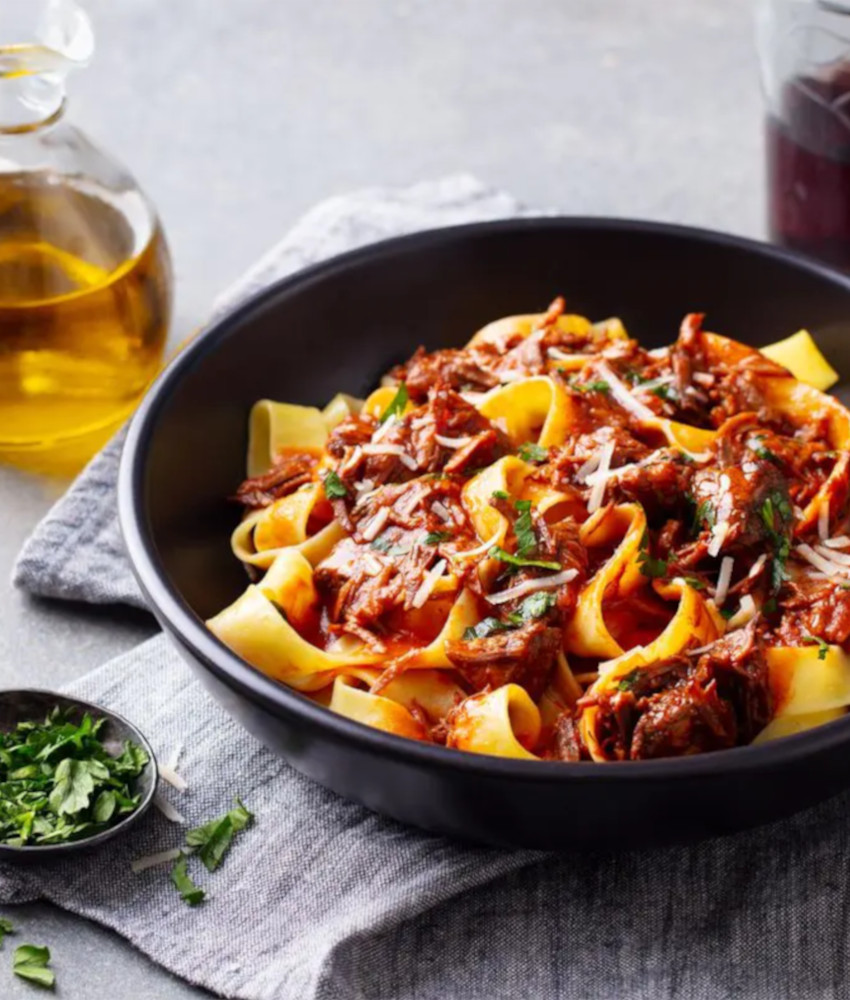

Pappardelle al Ragù
Description
Il Ragù!
In Italian cuisine, ragù is a meat-based sauce that is commonly served with pasta. An Italian gastronomic society, Accademia Italiana della Cucina, documented several ragù recipes. The recipes' common characteristics are the presence of meat and the fact that all are sauces for pasta.
Il Pappardelle!
Pappardelle are large, very broad, flat pasta, similar to wide fettuccine, originating from the region of Tuscany. The fresh types are two to three centimetres wide and may have fluted edges, while dried egg pappardelle have straight sides.Ingredients
- Main Ingredients:
- 1.2kg Chuck Beef; (cut into 6 large pieces)
- 1 Large Onion; (finely chopped/diced)
- 6 Cloves of Garlic; (finely chopped/diced)
- 1 Cup of Carrots; (finely chopped/diced)
- 1 Cup of Celery; (finely chopped/diced)
- 800g of fine Tomatoes; (finely chopped/diced)
- 3 Table Spoons of Tomato Paste;
- 1 Beef Stock Cube / 1 Cup of Liquid Beef Stock;
- 1 Cup of a Fine Red Wine of Your Preference;
- Extra Virgin Olive Oil;
- Butter;
- For Seasoning:
- Black Pepper;
- Salt;
- 1 Tea Spoon of Dried Basil;
- 1 Tea Spoon of Dried Thyme;
- 1 Tea Spoon of Dried Oregano;
- To Serve:
- Fresh Parmesan Cheese, Parmigiano Reggiano or Pecorino; (finely chopped/diced)
- Fresh Parsley or Basil; (finely chopped/diced)
- 500g of Dried Pappardelle.
How to Prepare
- Preseason the Meat:
Pat beef dry and sprinkle with Salt and Pepper to taste; - Soffrito:
Turn the stove to a medium low temperature and add 2 table spoons of Olive Oil and 1 table spoon of Butter in a heavy based pot or slow cooker. Add the Garlic, Onion and sauté for about 2 minutes. Then add the Carrots and Celery and sauté slowly for 5 minutes, then remove onto a plate or bowl; - Sear Beef:
Heat 3 table spoons of Olive Oil and 1 table spoon of Butter over high heat. Add the Beef and sear each piece aggressively on all sides until both pot and meat are browned; (3 - 5 minutes in total.) - Deglaze:
Add the red wine and scrape the bottom of the pot with a spatula or wooden spoon; - Add the Remaining Main Ingredients:
Turn the stove up and bring it to a simmer, then turn it down to low so it's bubbling very very gently; - Season the Sauce:
Season with Black Papper, Salt, Dried Basil, Dried Thyme and Dried Oregano to taste; - Slow Cook:
Cover the pot and let it cook for 2 hours or until the Beef is tender enough to shred; - Shred:
Remove the Beef then coarsely shred with 2 forks and then return it to the pot. Simmer for 30 minutes until sauce is reduced and thickened - the beef will soften slightly more during this step; - Final Season:
Do a taste test and adjust the seasoning. Add one tea spoon of sugar to taste at a time if the sauce is sour to your taste. Place the lid on and set aside until ready to serve.
How to Serve
- Bring a very large pot of water with 1 tbsp of salt to the boil. The amount of water should be enough for the pasta to float inside the pot and the taste should resemble sea water;
- Add pasta and cook. Start tasting the pasta 1 minute before the recommended cooking time as per the packet instructions;
- Meanwhile, place 5 cups of the Ragù in a very large fry pan or pot of your choice (a large pan is recommended). Heat over high heat while the pasta is cooking;
- When the pasta is ready, transfer it directly from the pot into the fry pan using tongs;
- Add one or two kitchen ladles of the pasta water into the frying pan. But remember to be very careful with the amount of salt present in both the Ragù and pasta water;
- Gently toss the pasta for 1 to 2 minutes, until the sauce water evaporates and leaves you with a thick Ragu sauce that coats the pasta;
- Serve with plenty of freshly grated cheese of your choice;
- Enjoy yourself.